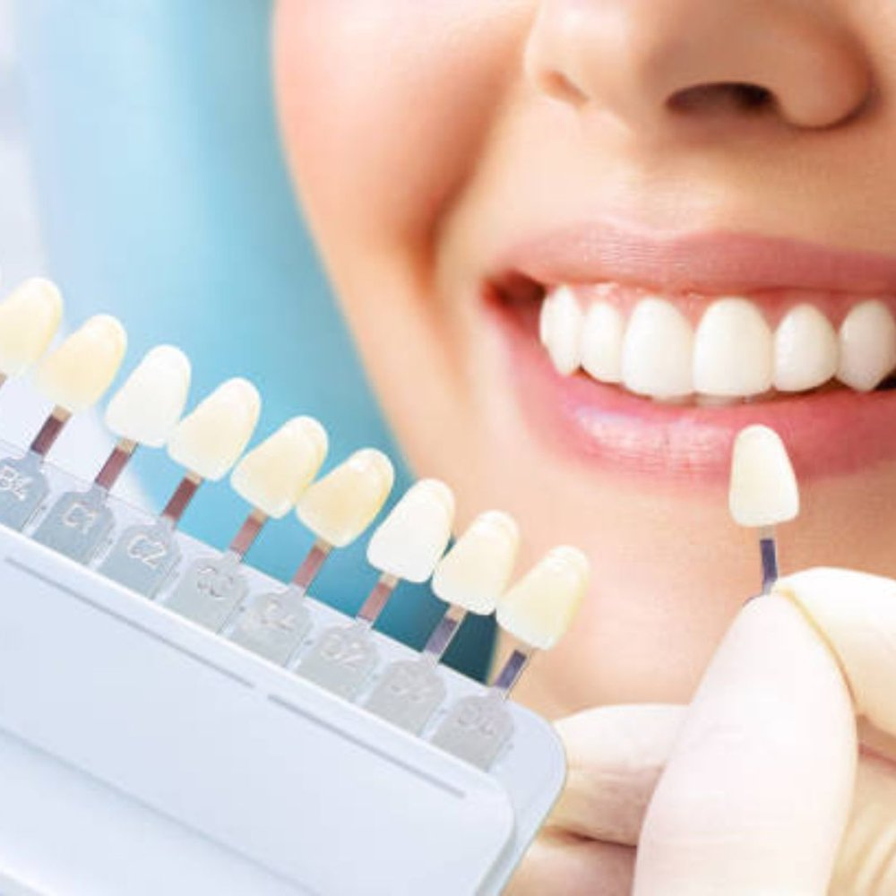

Fast and Efficient Care
Your visit should feel organized from start to finish. We keep things moving smoothly and completely respect your busy daily schedule.
Preventive care, implants, aligners and emergency visits, all explained clearly and delivered on your time.
Dunwoody Dental Health is a trusted dental clinic dedicated to providing exceptional, patient-centered care in a welcoming and modern environment. Serving our local community with pride, the practice offers comprehensive dental services, including preventive care, cosmetic dentistry, dental implants, restorative treatments, emergency dentistry, and clear aligners. With a team of experienced professionals, advanced dental technology, and a commitment to honest communication, Dunwoody Dental Health ensures every patient receives personalized treatment tailored to their unique needs. Our focus on comfort, quality, and long-term oral health has earned us a reputation for compassionate care, helping patients of all ages achieve healthy, confident smiles. Whether you need a routine cleaning or advanced restorative work, we strive to make every visit efficient, transparent, and completely stress-free.
Your visit should feel organized from start to finish. We keep things moving smoothly and completely respect your busy daily schedule.
Need treatment urgently? We can often take care of your dental procedures on the exact same day, helping you avoid unnecessary extra visits.
Digital scans and advanced imaging help us diagnose issues clearly, explain treatment paths better, and perform procedures much more efficiently.
You will always know what we see, what we recommend, and what your options are, without ever feeling rushed or pushed into decisions.
The mission of Dunwoody Dental Health is to deliver exceptional, compassionate, and personalized dental care that empowers patients to achieve optimal oral health and radiant smiles. We are committed to fostering a welcoming environment where open communication, modern technology, and clinical excellence meet. By prioritizing patient education and comfort, we aim to eliminate dental anxiety and build lasting relationships built on mutual trust. Every member of our team is dedicated to treating individuals with the utmost respect, ensuring that clinical recommendations always align with the personal needs and wellness goals of each patient. We strive to make quality dentistry accessible, efficient, and stress-free for families and individuals throughout our community, helping everyone walk out with renewed confidence.
Our vision is to be the leading dental healthcare provider recognized for clinical excellence, patient-focused innovation, and unwavering community trust. We aspire to redefine the traditional dental experience by seamlessly integrating advanced diagnostic technology, efficient treatment workflows, and a deeply compassionate approach. Dunwoody Dental Health envisions a future where every patient looks forward to maintaining their dental health because they experience absolute comfort, transparent guidance, and predictable results. Through continuous professional growth, modern practices, and a genuine passion for healthy smiles, we aim to set a new standard for comprehensive dental wellness. We hope to inspire lifelong oral health habits across generations, serving as a reliable medical touchstone for families who value quality and integrity.
Our gentle techniques, calming environment, and supportive staff ensure that even nervous patients feel completely safe, relaxed, and comfortable throughout their visit.
We offer convenient payment plans, membership options, and accept major PPO insurance to ensure quality dental care easily fits your personal budget.
With streamlined appointments and same-day treatment capabilities, we minimize time away from your work and family commitments while maximizing oral health outcomes.
Our proactive approach focuses on preventing future complications, ensuring your teeth and gums remain strong, healthy, and functional for many years to come.
